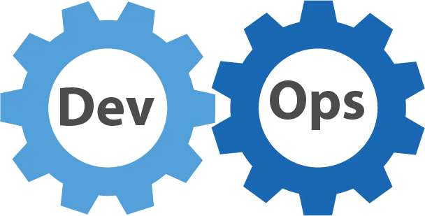

Reprinted from: 运维的未来是平台工程
Author: Ruan Yifeng
Internet companies have an important job role called “operations.”
“Operations” in English is Operations, abbreviated as Ops, which literally means “operations,” referring to various server operations.
Simply put, operations engineers are people who manage servers and ensure the code running environment.
This is very important work, and companies should value it highly. But in reality, over the past few years, operations positions have been continuously shrinking, and Ops engineers are being asked to transform into DevOps engineers. As far as I know, many operations engineers are actually quite troubled.
How should we view this change? Do operations have a future? How will they develop in the future?

Recently, I read an article by a foreigner titled The Future of Ops is Platform Engineering.
“The future of Ops is platform engineering.”

The author systematically answered the above questions, believing that operations will eventually disappear and evolve into a new job role—“platform engineering.”
I think his article is very enlightening and has clarified my view of operations a lot. Let me share it with everyone.
I. The Origin of Operations
In the earliest days, there were no operations; programmers were responsible for both writing and running software.
However, writing software and running software are actually two different skills: the former requires familiarity with code, while the latter requires familiarity with servers.
After internet software developed, these two skills gradually separated.
Development engineers were responsible for writing code, while operations engineers were responsible for running code (i.e., ensuring the server running environment).
II. The Decline of Operations
Facts have proven that separating development and operations was a huge mistake.
People who write code don’t understand the server environment, and people who manage servers don’t understand what the code is doing. This is not conducive to making excellent products or troubleshooting problems.
Therefore, some companies promoted bringing development and operations back together: people who write software should also be responsible for running software.
This is the origin of DevOps, which equals Dev (development) + Ops (operations).

On the other hand, the core assets and competitiveness of internet companies are more about code than operations. So companies also have the willingness to invest more resources in development, gradually compressing dedicated operations teams, and actively outsourcing as much infrastructure as possible.
These two factors determine that operations as a separate job role is gradually disappearing.
III. The Problem with DevOps
However, DevOps actually cannot replace operations.
Increasingly complex business inevitably means systems and infrastructure are also becoming more complex, while still requiring stability and reliability.
Ordinary development engineers simply cannot achieve this. They neither understand all the infrastructure nor reach the professional operations system management level.
In this case, companies will choose to outsource, purchasing external cloud services, outsourcing infrastructure to professional cloud service providers to maximize cost compression.
IV. The Responsibilities of Operations
Although overall, operations is about managing servers, it can be subdivided into two aspects of responsibilities: building infrastructure + managing the running environment.
“Building infrastructure” refers to hardware procurement, installation, racking, networking, and other work.
“Managing the running environment” refers to ensuring the operation of business software.
After DevOps emerged, the “building infrastructure” responsibility gradually disappeared, becoming cloud service procurement, while the “managing running environment” responsibility was transferred to DevOps engineers.
Then, a new problem emerged: Who is responsible for procuring and integrating cloud services?
V. What is Platform Engineering
Procuring suitable cloud services is not a simple matter.
Cloud services are complex and diverse, with various APIs, SDKs, and supporting tools that are dazzling. Even experienced operations engineers find it difficult to explain clearly.
Therefore, there needs to be dedicated personnel to make correct decisions, choose a set of cloud services that meet needs, and be responsible for writing tools to integrate all procured cloud services for business development use.
This role is called platform engineering. They are responsible for evaluating, procuring, and integrating various cloud services as their own infrastructure, and building their own platform on top of external cloud services, allowing development engineers to self-service on it and deploy their code to production.
The above definition has several key points.
(1) Infrastructure is outsourced to minimize costs and development cycles.
(2) Platform engineers are responsible for integrating outsourced infrastructure to build a platform.
(3) Development engineers on this platform independently build and manage the running environment and run their own code.
VI. The Difference Between Platform Engineering and Operations
There are several significant differences between platform engineering and operations.
(1) Platform engineering requires developing software, including writing tests and code reviews. The team operates very much like a development team, with product managers, and even designers and frontend engineers.
Operations generally don’t develop application software, at most writing some automation scripts.
Previously, some engineers wrote code, and some engineers ran code. In the future, all engineers will write code and run their own code, whether you’re a development engineer, DevOps engineer, or platform engineer. The difference is only in the scope of responsibilities divided by layers or functions.
(2) Platform engineering is cloud-native, with all work existing in the cloud.
Operations is not cloud-native and needs to manage hardware themselves, only supporting the cloud.
(3) Platform engineering procures cloud services, while operations procures hardware.
VII. The Future for Operations Engineers
With the disappearance of traditional operations roles, existing operations engineers will inevitably face transformation, with only three possible paths to choose from.
(1) If you like developing business software, you can choose to become a DevOps engineer.
(2) If you like developing platform software, you can choose to do platform engineering, focusing on infrastructure integration.
(3) If you prefer hardware and underlying layers, you can choose to join “Infrastructure as a Service” (IaaS) cloud companies, deeply researching infrastructure.
(End)